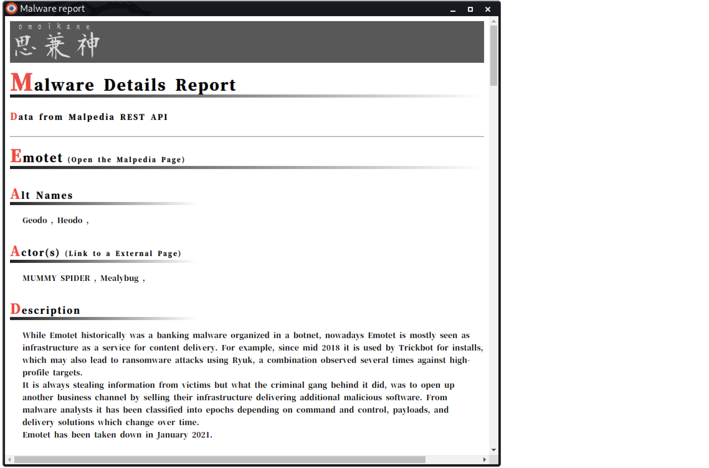

OSINT support tool for malware analysts.
chrome://extensions/).

[] only.Cyber crime actor's a.k.a. search function.

A Malpedia Actor Page opening function via a.k.a. search results.
Actor's details report creation function.

Malware family search function.

Malpedia malware family page opening function via malware family search results.
Malware details report creation function.

IP Investigation report creation function (API-key required.)

IP address search with...
Domain Investigation report creation function.

Domain name search with...
This extension's some functions use external REST APIs and analysis sites. Therefore function behavior is affected by dependent sites. In addition, some attributions, especially a.k.a, may differ from some other sources. If you will use data from this extension, please confirm other sources and compare data.
The some REST APIs used by this extension must use an API-KEY. Therefore, first, I recommend you to register on sites which is providing API and get an API-key. If you didn't register the site, the IP Investigation Report Creation Function doesn't work.